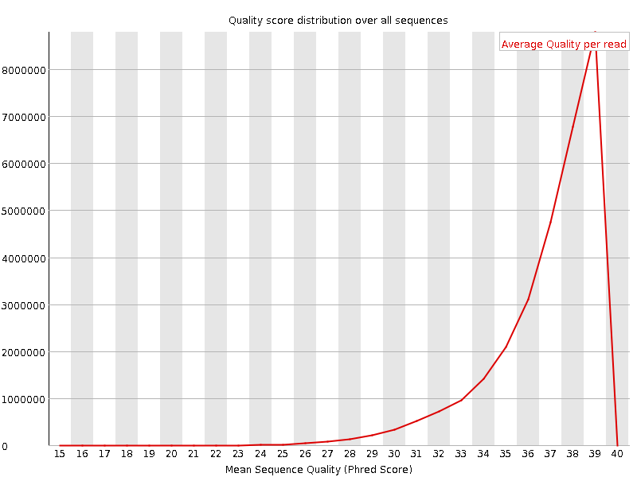
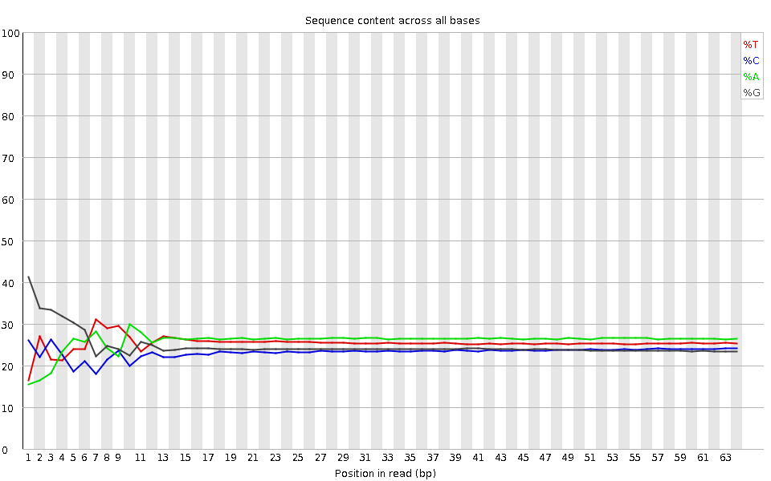
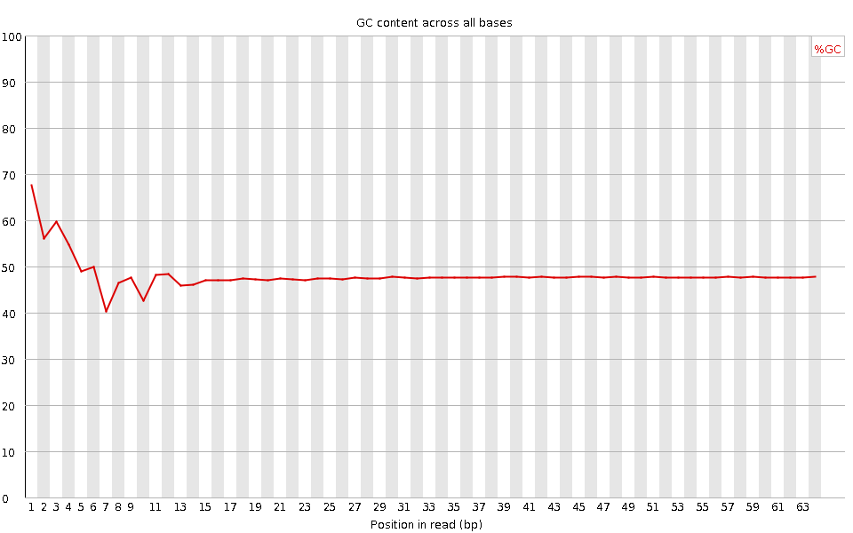
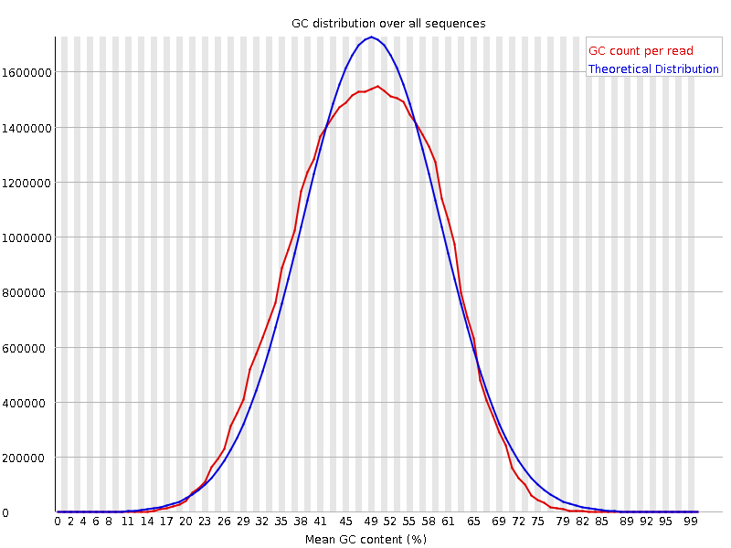
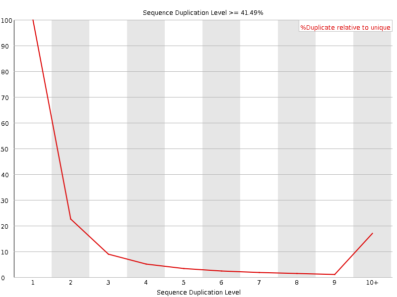
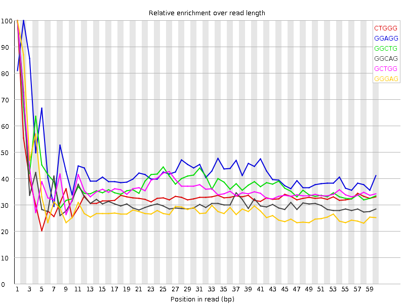

![[OK]](Icons/tick.png) Basic Statistics
Basic Statistics
| Measure | Value |
|---|---|
| Filename | SRR307910_pe_1.f.fastq |
| File type | Conventional base calls |
| Encoding | Sanger / Illumina 1.9 |
| Total Sequences | 30171789 |
| Filtered Sequences | 0 |
| Sequence length | 64 |
| %GC | 48 |
Per base sequence quality

Per sequence quality scores

![[FAIL]](Icons/error.png) Per base sequence content
Per base sequence content

Per base GC content

Per sequence GC content

Per base N content

Sequence Length Distribution

![[WARN]](Icons/warning.png) Sequence Duplication Levels
Sequence Duplication Levels

Overrepresented sequences
No overrepresented sequences
Kmer Content

| Sequence | Count | Obs/Exp Overall | Obs/Exp Max | Max Obs/Exp Position |
|---|---|---|---|---|
| CTGGG | 4234515 | 2.5359921 | 7.5355444 | 1 |
| GGAGG | 4321895 | 2.3807433 | 5.4295154 | 2 |
| GGCTG | 3955810 | 2.3690796 | 6.1116924 | 1 |
| GGCAG | 3997290 | 2.3410428 | 7.283353 | 1 |
| GCTGG | 3897020 | 2.3338711 | 6.307169 | 1 |
| GGGAG | 3802985 | 2.0948987 | 7.056966 | 1 |
| TGGGG | 3386855 | 1.9078119 | 5.771167 | 2 |
| GGGCA | 3228120 | 1.8905727 | 6.187705 | 1 |
| GGGGG | 2981845 | 1.7253554 | 10.457864 | 1 |
| GGGGA | 3127355 | 1.7227235 | 9.03476 | 1 |
| GGGAA | 3148695 | 1.651254 | 5.5007973 | 1 |
| GTGGG | 2915390 | 1.6422361 | 8.375636 | 1 |
| GGGTG | 2840070 | 1.5998085 | 5.465802 | 2 |
| GGGGC | 2547675 | 1.5672663 | 5.7109785 | 2 |
| GGGGT | 2578790 | 1.4526297 | 6.8236346 | 1 |
| CGGGG | 1485070 | 0.91357815 | 7.7932844 | 1 |